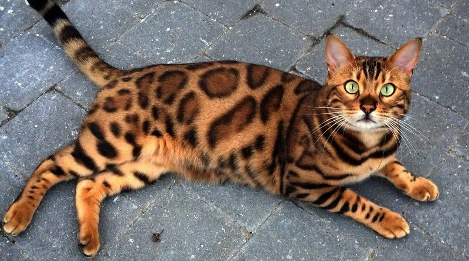
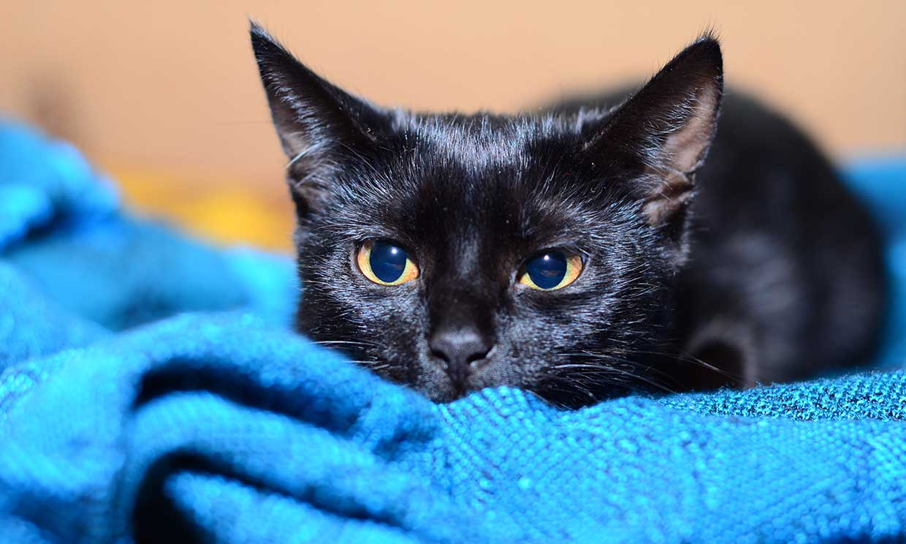
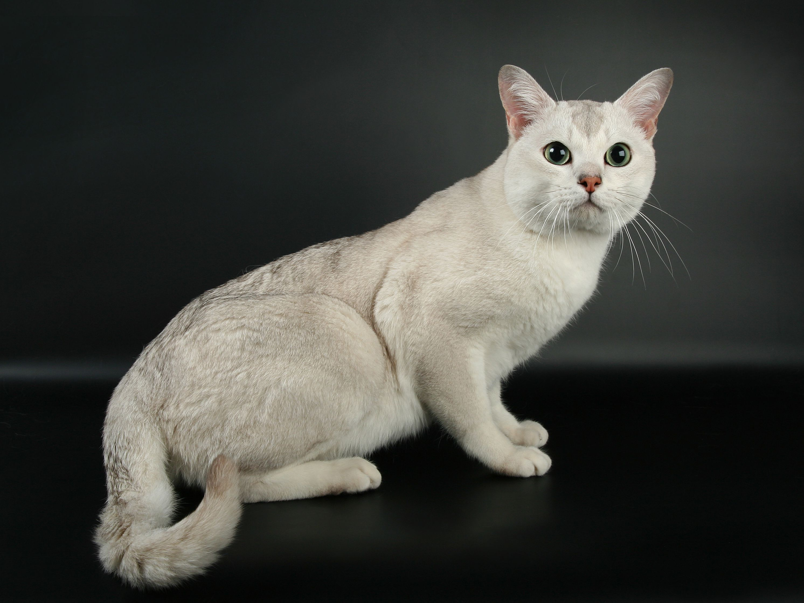
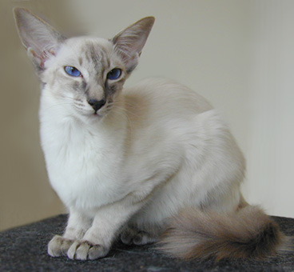

El gato de Bengala, también llamado gato bengalí o gato bengal, pertenece a una raza muy singular. Parece un «tigre doméstico» en el sentido literal. Los criadores apuestan por un toque de sangre salvaje en gatos híbridos como el bengalí o el savannah, la última moda en cría felina. 
El bombay es un gato doméstico de pelo corto y, aún hoy en día, poco común. De hecho, es en Europa donde menos gatos de esta raza hay. Es tan extraña como fascinante. El gato bombay es como una pequeña pantera hogareña. Si te fascinan estos grandes felinos y te gustaría tener a uno de estos mini tigres en tu sofá, entonces el gato bombay puede ser una buena opción para ti. Pues, aunque aparenta ser una peligrosa, bonita y pequeña pantera, es un encantador y cariñoso minino. Esta raza se considera muy agradable en la convivencia. 
Esta raza juguetona, aún bastante reciente y procedente de Gran Bretaña, es el resultado de un cruce espontáneo entre un gato persa chinchilla con un burmés. Existen varios mitos sobre la creación de esta raza, cada cual más lindo y bonito que el anterior. Esta belleza de reluciente pelaje plateado es adecuada para la tenencia en un hogar pequeño, con espacios reducidos. Pero el gato burmilla también disfruta al aire libre. Es un felino que adora ser parte de una familia. 
El gato balinés llama mucho la atención, sobre todo a quienes les gusta el gato siamés y el birmano. Al igual que el siamés, tiene un llamativo patrón color point, pero su pelaje es de tamaño medio. 